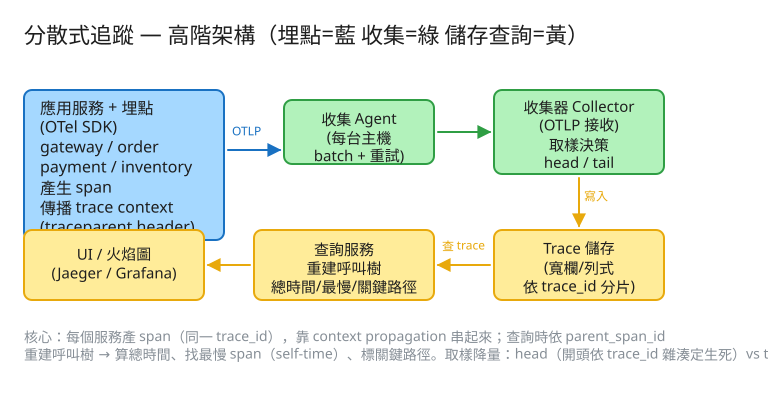

J 可觀測性 建議 45 分鐘 Design a Distributed Tracing System
trace_id 取回整條 trace，重建成呼叫樹，以火焰圖呈現各 span 的時間軸。| 指標 | 假設 | 推算 |
|---|---|---|
| 請求量 | 10 萬 req/s | 每請求平均跨 20 個 span |
| 原始 span 率 | 10萬 × 20 | ~200 萬 spans/s（不取樣會爆） |
| 取樣後 | head 取樣 1% | ~2 萬 spans/s 真正落地儲存 |
| 單 span 大小 | ~500 bytes（含 tags） | 2萬 × 500B ≈ 10 MB/s ≈ ~860 GB/日 |
| 保留 | 7 天 | ≈ 6 TB（取樣後；不取樣是 100 倍） |
# 上報 span（被埋點 SDK 批次送，走 OTLP）
POST /v1/traces # OpenTelemetry OTLP
Body: { "resourceSpans": [ ... 一批 span ... ] }
→ 202 Accepted（非同步，盡量不阻塞）
# 取回整條 trace（重建樹）
GET /api/trace/{trace_id}
→ { trace_id, total_ms, slowest, critical_path, tree:[...] }
# 搜尋 trace（找慢/錯的代表）
GET /api/search?service=payment&min_duration_ms=500&error=true&limit=20
# 取樣決策（教學示範用）
POST /api/sample Body: { trace_id, rate } → { sampled, bucket, rate }
span（一個工作單元；trace = 同一 trace_id 的 span 集合）
trace_id BINARY(16) -- 一整條請求鏈共用（全域唯一）
span_id BINARY(8) -- 單一 span 唯一
parent_span_id BINARY(8) -- 指向上一層 span；根 span 為空
service VARCHAR -- 服務名
name VARCHAR -- 操作名（GET /checkout、SELECT…）
start_us BIGINT -- 起始時間（微秒）
duration_us BIGINT -- 耗時
status ENUM(ok,error)
tags / attrs JSON -- http.method、db.statement…（小心高基數）
-- trace 不是一張表，而是「同 trace_id 的所有 span」。
-- parent_span_id 把扁平 span 連成一棵「呼叫樹」（DAG，通常是樹）。
✏️ 用 Excalidraw 開啟編輯（diagram.excalidraw） 應用服務(埋點 OTel SDK) ──OTLP──▶ 收集 Agent(每台主機, batch) ──▶ 收集器 Collector
產 span / 傳 context (取樣 head/tail)
│ 寫入
▼
UI/火焰圖 ◀── 查詢服務(重建樹/總時間/最慢/關鍵路徑) ◀── Trace 儲存(依 trace_id 分片)trace_id 與 span_id 透過 context propagation（如 W3C traceparent header）傳到下游。trace_id 與根 span_id。呼叫下游時，把這兩者塞進 HTTP header（traceparent）或訊息 metadata。trace_id、把自己的 span 的 parent_span_id 設為上游的 span_id。這一步是整個系統的命脈：漏傳就斷鏈，trace 變成一截一截的孤兒。parent_span_id 把每個 span 掛到父 span 底下，重建成樹（兩輪掃描：先建節點索引，再依 parent 掛載）。hash(trace_id) % N == 0）。優點：便宜、各服務決策一致（同 trace_id 一致）、不用先全收。缺點：盲取樣——出問題的慢/錯 trace 也可能被丟。把每個 span 畫成一條水平長條，左端 = 起始時間、長度 = 耗時，依父子垂直堆疊。一眼看出「哪段最寬（最慢）、哪些並行、時間花在哪」。
| 階段 | 瓶頸 | 對策 |
|---|---|---|
| 埋點開銷 | 產 span 拖慢業務請求 | 非同步 batch 上報、span 本地緩衝、低開銷 SDK |
| 原始 span 量 | 200 萬 spans/s 灌爆收集/儲存 | 取樣（head 便宜 / tail 留價值）+ Collector 批次/限流 |
| 高基數 tags | 把 user_id / 完整 URL 塞進 tag → 索引爆炸 | tag 值要有界；高基數放 span body 不建索引 |
| 儲存成本 | 全量保留太貴 | 短保留期 + 冷熱分層 + 取樣後才落地 |
| 查詢「整條 trace」 | span 散在多分片要 join | 依 trace_id 分片，同 trace 同片，一次撈完 |
| 跨服務斷鏈 | 某服務沒傳 context | 標準化傳播（W3C traceparent）+ SDK 自動注入 |
trace_id 互相關聯。本題 demo 用 PHP 內建伺服器把追蹤系統的核心邏輯做成真實可跑：
src/TraceStore.php 由扁平 span 依 parent_span_id 重建呼叫樹、算總時間、用 self-time 找最慢 span、走關鍵路徑，並做 head-based 取樣（crc32(trace_id) % rate），以 flock 持久化到 JSON。public/index.php 路由 GET /（測試頁：內建一條跨 4 服務的 trace，看重建樹 + 火焰圖長條 + 標最慢 + 取樣示範）、POST /api/spans（批次收 span）、GET /api/trace/{trace_id}（回樹 + 總時間 + 最慢 + 關鍵路徑）、POST /api/sample（取樣決策）。# 啟動
cd demo
php -S localhost:8044 -t public
# 瀏覽器開 http://localhost:8044：看 /checkout 的呼叫樹被重建、火焰圖標出最慢的 call_bank_api、取樣 1/10 的決策